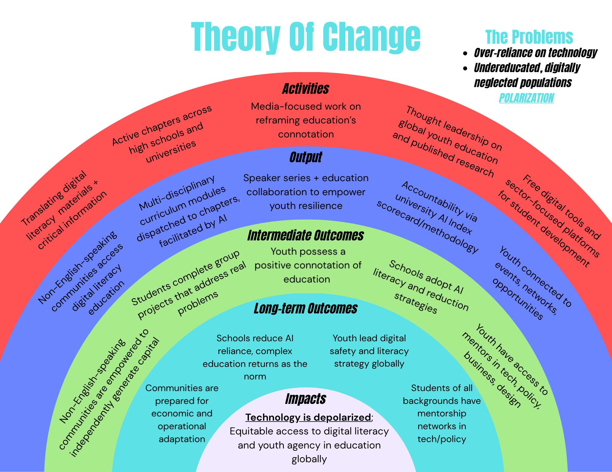
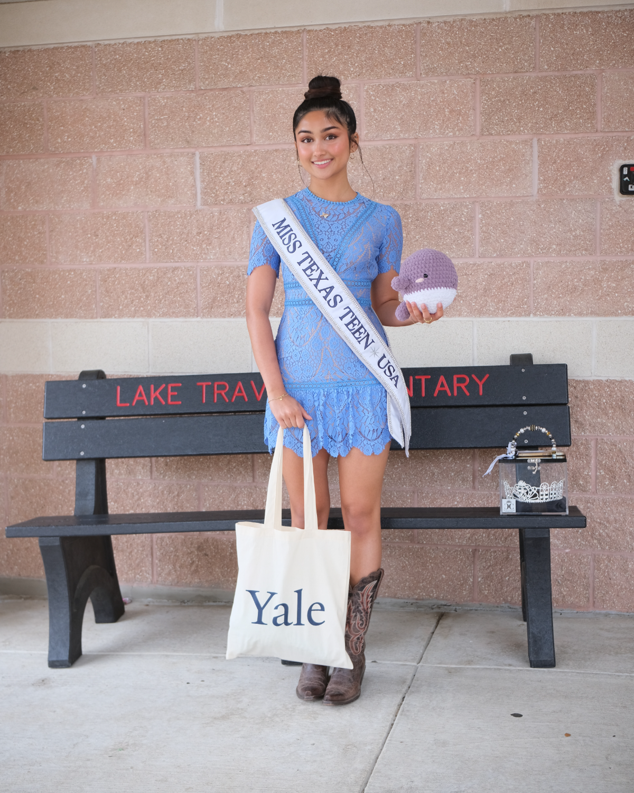
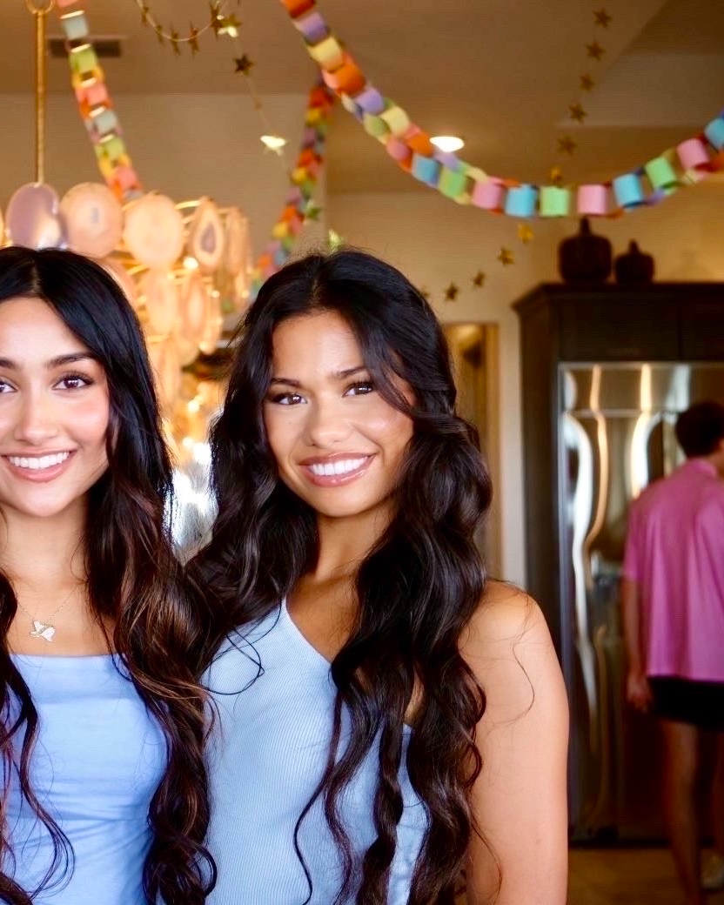

The contemporary global landscape is defined by a profound asymmetry in technological access and comprehension. As autonomous systems and machine learning models increasingly dictate the infrastructure of global commerce, education, and civic discourse, sophisticated technology education remains restricted. Conversely, within the environments where this technology is accessible, a parallel crisis has emerged: an uncritical over-reliance on automated tools that erodes independent analytical capacity. The Imagination Project, a 501(c)(3) nonprofit organization, operates at the intersection of these two structural failures. Our mandate is to depolarize the educational landscape by dismantling the systemic barriers to digestible educational resources and correcting the intellectual hazards of over-reliance. We reject both passive technological exclusion and passive technological consumption, replacing them with programs that equip the next generation to critically evaluate, audit, and command the systems reshaping our world.
The rapid proliferation of artificial intelligence technologies has outpaced the development of inclusive regulations, resulting in two distinct crises:
Approximately 80% of foundational codebases, peer-reviewed computer science literature, and international governance discourse occurs exclusively in the English language. This bars non-Anglophone populations from contributing to or contesting the development of technical standards.
The generation that must navigate a reshaped economy is they very one treated as a passive consumer base. Schools are outpaced by technology, leaving technology-savvy students to rely heavily on AI tools to supplement education. We are not an anti-AI organization, simply, pro-ethical usage.
It is difficult for emerging leaders and future adults to perceive their futures as tangible: this causes an inaction in the classroom. We hope to connect students to opportunities that replenish civic agency, providing a sense of educational meaning, intellectual excitement.
The Imagination Project executes a multi-layered intervention to dismantle these barriers and establish a more balanced distribution of technological authority.
1. By translating and culturally contextualizing complex AI literacy into as many languages as possible, we eliminate the English-centric bottleneck and create an opportunity to welcome global perspectives into policy research.
2. We reject the premise that technical tool instruction constitutes comprehensive education. Our model focuses on non-obsolescent intellectual capabilities: dialectical reasoning, problem-solving, and policy authorship.
3. We ground all advocacy in data. Our initiatives, such as the upcoming AI Index, constructs open-source, reproducible evaluation scorecards that can be used to audit technological impacts globally.
Explore the programs →
TIP'S TOCWe coordinate peer-to-peer student networks to translate, verify, and distribute academic AI materials into as many languages as possible, removing geographical and socio-economic access barriers.
We work with data scientists and investigate universities across the U.S. to produce a replicable AI Index. This acts as a form of accountability for higher education institutions to execute internal technological audits.
We will operate rigorous training environments that bypass fleeting technical skills to focus exclusively on policy analysis, career development, and real-world impact for students. Conversely, this programming in a global capacity offers skills for those without access to AI.
We intend to codify the insights from physical cohorts into a globally accessible digital platform. This platform will contain an asynchronous curriculum ledger, an executive mentorship matching engine, and more to be used as an semi-in-person after-school programming, summer camp, and year-round student development tool.
By 2030, TIP intends to make advanced digital literacy education available in more than just the world's major languages; an AI index trusted across US colleges; a hub where students across countries can find a mentor, a cohort, steps toward potential career paths, and finally, TIP alumni recieving invitations to share input on the future of education in a technology-facing world.
If it isn't translated, it isn't finished. TIP aims to reduce the growing global literacy divide.
We value and work to preserve the permanent human capabilities of reasoning, rhetoric, and thought.
Creativity, judgment, and critical thought are trainable, and irreplaceable.

FounderFounder · Yale University
Laika founded The Imagination Project in 2025, the same month she was crowned Miss Texas Teen USA. Within four months she had written and delivered the Dear Future Leader curriculum to more than five hundred elementary students across Texas, and the accompanying children's book (Dear Future Leader: The Wondermaker) now funds literacy and hygiene programs for over eight hundred women served by Manav Sadhna in Ahmedabad, India.
A former President of Texas DECA, she brings experience across business, cultural exchange, service, and the arts. She is currently a freshman at Yale University.

Executive DirectorExecutive Director · Texas A&M University
Growing up in a half-Vietnamese, half-Italian household, Anabella developed a deep appreciation for tradition and culture. She joined The Imagination Project in 2026, bringing experience across the arts and medicine.
She founded a local Leo Club chapter that scaled across Austin, and is now a neuroscience major at Texas A&M University.
Companies, districts, researchers, journalists: reach out to us for in-depth reports on TIP, global digital literacy, and student dependence.
Partner with TIP →